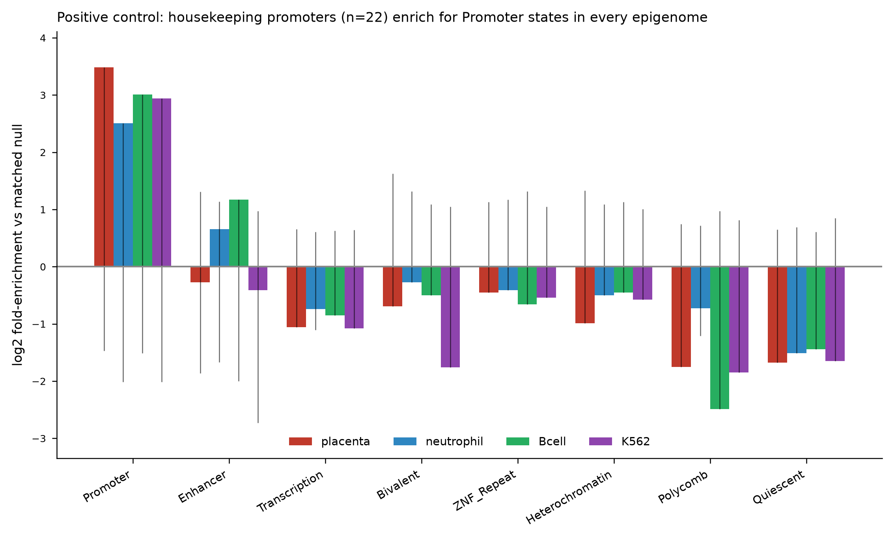
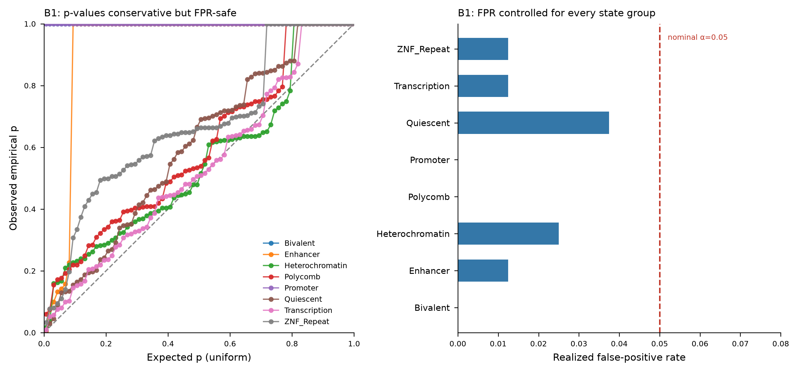

Explainable chromatin-state annotation and matched-null enrichment for cfDNA genomic regions (hg38).
This is the chromatin-state interpretation module of a larger explainable-AI (XAI) pipeline for cell-free DNA fetal-fraction analysis (an improved seqFF). Given a set of important or differential cfDNA genomic regions — for example, the bins a fetal-fraction model weights most heavily, or regions that differ between sample groups — the module answers: what chromatin biology sits under these regions, and is that association statistically real?
You bring the model, the tool explains it. selection.shap_from_model(model, X)
takes your own fitted fetal-fraction model (any scikit-learn-style regressor or
classifier — tree ensemble, linear, or arbitrary) plus its feature matrix and
computes a region-anchored SHAP attribution locally, so no cfDNA data has to leave
your machine. The resulting attribution flows straight into the chromatin-explanation
stages below. If your cohort is in hg19 (as legacy seqFF cohorts are), the
liftover module crosses the hg19↔hg38 boundary on coordinates only, with QC.
It annotates each region against ChromHMM 18-state reference epigenomes, then tests whether any state is enriched relative to a GC / length / mappability-matched null background — the statistical control that separates a real biological signal from the trivial fact that some genomic regions are GC-rich, gene-dense, or simply large. Two further state-independent layers — a six-mark histone ChIP-seq fingerprint and an open-chromatin DNase-seq layer — give orthogonal cross-checks on the ChromHMM call using the same matched-null machinery.
Of all the XAI layers one could build on top of important cfDNA regions (chromatin state, cell-of-origin, cfGWAS, ...), chromatin state is the one with external ground truth: reference epigenomes, housekeeping-gene promoters, and gene deserts have known answers, so the engine can be benchmarked rather than merely run. Building it first also establishes the statistical scaffolding — the matched null, the calibration harness — that every later layer inherits.
The engine is exercised end-to-end on real hg38 data (scripts/run_demo.py):
Positive control (B2). Promoter windows (±2 kb) of 22 housekeeping genes are annotated against four epigenomes. In every one, they enrich for Promoter chromatin states relative to the matched null:
| Epigenome | Promoter log2 fold-enrichment | empirical p |
|---|---|---|
| placenta | +3.49 | 0.002 |
| neutrophil | +2.51 | 0.002 |
| B cell | +3.01 | 0.002 |
| K562 | +2.94 | 0.002 |
Quiescent, Polycomb and Transcription states are correspondingly depleted — the expected signature of constitutively active promoters.

Calibration (B1). Signal-free query sets (regions drawn from the same mappable-genome process as the background) are fed through the engine. The realized false-positive rate is controlled at every state group (0.000–0.037, all ≤ the nominal α=0.05). The empirical p-values are conservative rather than perfectly uniform — a known discreteness effect for rare states at small n (see docs/benchmarking.md for the diagnosis and the planned refinement). Conservative-but-safe is the correct failure mode for a discovery gate: it never inflates false positives.

git clone https://github.com/USER/cfdna-chromatin-xai
cd cfdna-chromatin-xai
pip install -e . # core: annotation + enrichment
pip install -e .[xai] # + SHAP-from-model and hg19<->hg38 liftover
python scripts/fetch_fasta.py # one-time: hg38 chr19-22 FASTA (~63 MB, gitignored)
python scripts/run_demo.py # reproduces the figures above
The four ChromHMM 18-state reference BEDs (~17 MB) ship in data/; the sequence
FASTA is fetched separately because it is large and re-downloadable. The [xai]
extra pulls shap, scikit-learn, joblib, and pyliftover — needed only for
the SHAP-from-model and liftover paths, so the core install stays lightweight.
from cfdna_chromatin import references as R, genome as G, engine as E
seg = {t: R.load_segmentation(f"data/{t}_{a}.bed.gz", chroms=["chr19"])
for t, a in R.REFERENCE_ACCESSIONS.items()}
genome = G.load_genome({"chr19": "data/fasta/chr19.fa.gz"})
regions = [("chr19", 1_000_000, 1_050_000), ...] # your important/differential bins
# 1. annotate one region
ann = E.annotate_region("chr19", 1_000_000, 1_050_000, seg["placenta"])
# -> {"dominant_state": "TssA", "composition": {...}, "active_fraction": 0.9}
# 2. test state enrichment vs a matched null
nm = E.NullModel(genome=genome, chroms=["chr19"], seed=0)
res, meta = E.enrichment_test(regions, seg["placenta"], nm, by="group")
# -> per-group log2 fold-enrichment, bootstrap CI, empirical p
# 3. orthogonal histone-mark cross-check (independent of ChromHMM)
from cfdna_chromatin import histone as H
panel = H.load_mark_panel("data/histone", chroms=["chr19"]) # 6 marks x 4 tissues
mres, _ = H.mark_enrichment_test(regions, panel["placenta"], nm)
# -> per-mark peak-coverage log2 fold-enrichment vs the same matched null
# 4. orthogonal open-chromatin cross-check (DNase-seq, also ChromHMM-independent)
from cfdna_chromatin import accessibility as A
apanel = A.load_access_panel("data/access", chroms=["chr19"]) # 1 track x 5 tissues
ares, _ = A.access_enrichment_test(regions, apanel["placenta"], nm)
# -> DNase peak-coverage log2 fold-enrichment vs the same matched null
# 5. compartment attribution -- which cell-of-origin explains each region?
from cfdna_chromatin import attribute as AT
hpanel = H.load_mark_panel("data/histone", chroms=["chr19","chr20","chr21","chr22"])
per, summ = AT.attribute_signal(regions, hpanel, panel="fetal")
# -> each region labelled signal / inflammation / background / ambiguous / unexplained
# -> summ["signal_fraction"] = how much of the set is cell-of-origin vs background
# 6. importance/selection front-end -- rank bins by model attribution, then decompose
from cfdna_chromatin import selection as SEL
ranked = SEL.rank_by_shap(shap_df) # samples x bins SHAP matrix -> ranked bins
# (or SEL.rank_by_differential(matrix, labels) for a model-free Mann-Whitney ranking)
regions = SEL.to_regions(ranked, top_n=100) # feed the top bins straight into attribution
res, J = SEL.compartment_importance_test(ranked, hpanel, panel="fetal")
# -> res["signal_specific"] / res["background_specific"]: does importance concentrate in
# cell-of-origin or background chromatin, corrected for the genome-wide openness confound
If you already have a fitted fetal-fraction model, the whole SHAP → chromatin-biology
chain runs from one command. Feature columns must be genomic-bin names
(chrX:start-end) so the attribution is region-anchored.
# (A) hand it your model + feature matrix -- SHAP is computed locally
python scripts/run_ff_shap.py --model ff_model.pkl --matrix X.csv --out ff_ranked.csv
# (B) or a precomputed SHAP matrix (samples x bins) -- skip straight to the biology
python scripts/run_ff_shap.py --shap shap_ff.csv
# hg19 cohort? lift the ranked bins hg19->hg38 before the reference lookup (QC'd)
python scripts/run_ff_shap.py --model ff_model.pkl --matrix X_hg19.csv --from-build hg19
from cfdna_chromatin import selection as SEL, liftover as LO
# 1. region-anchored SHAP from YOUR model (explainer auto-selected:
# tree -> TreeExplainer, linear -> LinearExplainer, else KernelExplainer)
sv = SEL.shap_from_model(model, X) # -> samples x bins signed SHAP frame
ranked = SEL.rank_by_shap(sv) # keep the sign: FF is directional
# 2. hg19 -> hg38 build crossing, coordinates only, with QC
lifted, qc = LO.lift_regions(ranked, from_build="hg19", to_build="hg38")
print(qc["mapping_rate"]) # fraction of bins that lifted cleanly
# 3. placenta cell-of-origin positive control (fetal panel)
res, J = SEL.compartment_importance_test(lifted, hpanel, panel="fetal")
# res["signal_specific"] here reads as the placenta(signal)-vs-blood contrast:
# a real FF model's important regions should ENRICH placenta-specific chromatin.
The placenta positive control is the key check. For a genuine fetal-fraction
model, the SHAP-important regions should concentrate in placenta-specific open
chromatin — the fetal cell-of-origin. If they instead point at maternal blood, the
model is likely riding a coverage/GC artifact rather than fetal biology, and
run_ff_shap.py flags that explicitly.
For the recommended hg19 workflow — pre-lifting the small, static reference tracks
down to hg19 once, so the whole analysis runs hg19-native — use
liftover.lift_reference_bed() on each shipped reference BED and run with
--from-build hg38 against the resulting hg19 bundle.
The chromatin engine is feature-agnostic — it scores any per-region set against
any reference. A panel (references.PANELS) declares which references to load for one
cfDNA application and what role each plays. The bundled panel is:
fetal — placental (fetal) signal on a maternal hematopoietic + solid-tissue
background (seqFF++ fetal fraction). attribute_signal(..., panel="fetal") labels each
region signal (cell-of-origin), inflammation (activated-myeloid axis),
background (resting hematopoietic), ambiguous, or unexplained, and
compartment_importance_test reports whether SHAP importance concentrates in the
placenta cell-of-origin compartment once the genome-wide openness confound is removed.The engine itself is panel-agnostic: additional panels can be declared from the bundled references without touching the engine code.
analysis/fetal_fraction/ carries an end-to-end tissue-of-origin readout that maps
per-feature |SHAP| from a fitted fetal-fraction model onto a 9-tissue hg19 50 kb
openness atlas and asks which tissue's specific open chromatin the important bins
concentrate in — placenta should lead for a genuine FF model.
# extract per-feature |SHAP| from a glmnet FF model in place (no per-patient data leaves)
Rscript analysis/fetal_fraction/extract_ff_shap.R --model ff_model.rds --x X.csv --out ff_shap.csv
# score against the shipped atlas
python analysis/fetal_fraction/run_ff_tissue_track.py --importance ff_shap.csv --outdir out_ff_tissue
See analysis/fetal_fraction/FF_IMPLEMENTATION.md for the full AWS-instance recipe and
analysis/fetal_fraction/reference/README.md for the atlas layout.
Roadmap/EpiMap ChromHMM 18-state model (identical vocabulary across all four):
| Key | ENCODE accession | Biosample | Role in cfDNA context |
|---|---|---|---|
| placenta | ENCFF024IDF | placenta male embryo (85 d) | fetal signal (fetal) |
| keratinocyte | ENCFF131MHN | keratinocyte | epithelial reference track |
| neutrophil | ENCFF412COT | neutrophil male | hematopoietic background |
| Bcell | ENCFF004HFC | B cell female adult | hematopoietic background |
| monocyte | (histone/DNase only) | CD14+ monocyte | activated-myeloid / inflammation axis |
| K562 | ENCFF026ZCC | K562 | unrelated-lineage control |
All ChromHMM segmentations share the identical 18-state EpiMap vocabulary; each tissue also carries 6 histone marks + a DNase track (monocyte has histone + DNase only — no 18-state ChromHMM exists for it). See docs/data_provenance.md for full provenance, accessions, and the two documented monocyte caveats.
src/cfdna_chromatin/ engine, references, genome, histone, accessibility,
attribute (compartment attribution), benchmark,
selection (importance front-end + shap_from_model),
liftover (hg19<->hg38 build crossing)
scripts/ fetch_fasta.py, fetch_histone.py, fetch_access.py,
fetch_ff_reference.py, run_demo.py,
run_ff_shap.py (fetal-fraction SHAP -> placenta biology),
run_shap_decomposition.py
analysis/fetal_fraction/ tissue-of-origin track: build_openness_atlas.py,
extract_ff_shap.R, run_ff_tissue_track.py,
ff_tissue_proportion.py, reference/ (shipped hg19 atlas)
tests/ fast unit tests (no network/FASTA needed)
data/ ChromHMM reference BEDs; histone/ ChIP-seq + access/ DNase
peak subsets (FASTA fetched into data/fasta/)
examples/ housekeeping-gene TSS windows used by the demo
docs/ benchmarking design, provenance, figures
This release implements B1 (calibration) and the B2 positive control. The full four-tier strategy — B2 negative controls, B3 recovery of known cfDNA biology (placental vs. hematopoietic, direction-aware), B4 orthogonal ground truth (held-out ENCODE tissue + WGBS methylation cross-check) — is specified in docs/benchmarking.md.
MIT — see LICENSE.